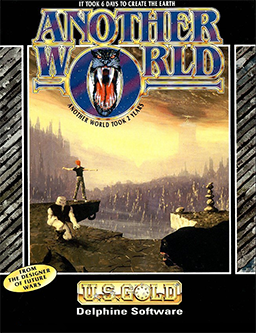

Platformer · 1991
Another World
Rotoscoped, wordless, and hostile in a beautiful way.

Cover: Wikipedia: Another World (video game)
Facts
- Released
- 1991-01-01
- Genre
- Cinematic Platformer
- Category
- Platformer
- Platforms
- Mobile, Nintendo, PC, Retro home computer, Sega
- Developers
- Delphine Software International, Éric Chahi
- Publishers
- Focus Entertainment, Interplay Entertainment, U.S. Gold